I had occasion to visit Brussels because it was the cheapest place for flying to Senegal. I have to admit that Brussels is a fun city, with many places to see, great places to eat, and enough motorists trying to run me over that I stayed on my toes. Definitely pricey, though. I couldn't even find a hostel to stay in, and had to stay in a budget hotel for almost seventy Euro per night.
I had a few places I wanted to visit. I wanted to see the European Parliament, the European Commission, and a museum set up by the Belgians with all the items they pilfered from the Congo during their time as the colonial power.
The first night, I went to the international district (called China Town by the Belgians, even though it was more Asians than just Chinese) and had amazingly good Thai food. Belgium impressed me for it's diversity in ethnicities, and in food. The best way I can describe it is Paris, but smaller and with a more diverse population, at least in the city center. The Belgians, like the Parisians, don't know how to clean up after their dog. Nor are they anywhere near as clean in their upkeep of the city as Germans and Scandinavians. Brussels, however, has a wonderful charm and a great atmosphere. Most of the time I spent taking black and white photos which I develop by hand, so they are not featured here. I mainly focused on portraiture while in Brussels, and did very limited travel photography.
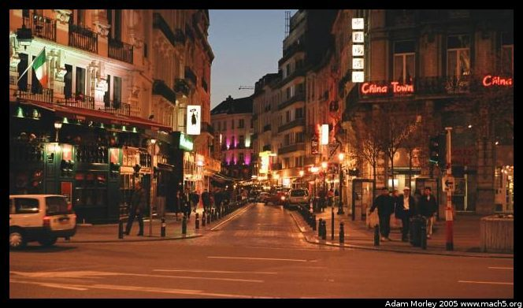China Town, where I had Thai food. This picture is taken close to the Hôtel de Ville, near a wonderfully famous cafe.
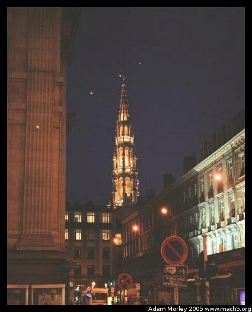The Hôtel de Ville, seen from far away.
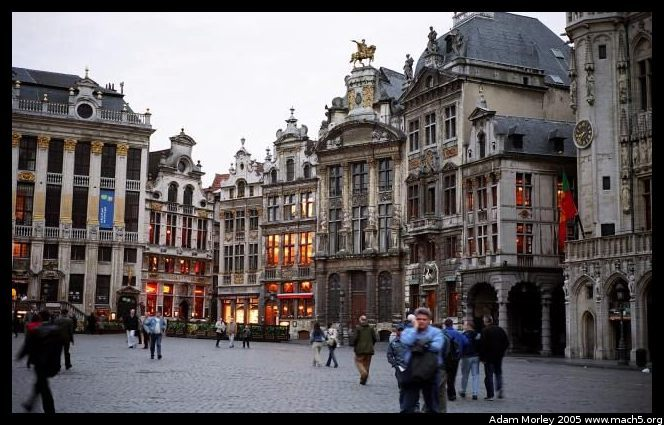The next day, I went to the central square of Brussels, which has a number of museums and the city hall. Amazingly beautiful buildings, and cafes everywhere. I never had the Belgian specialty of mussels, but I hear I didn't miss much. It truly amazed me how many restaurants there were around this part of town.
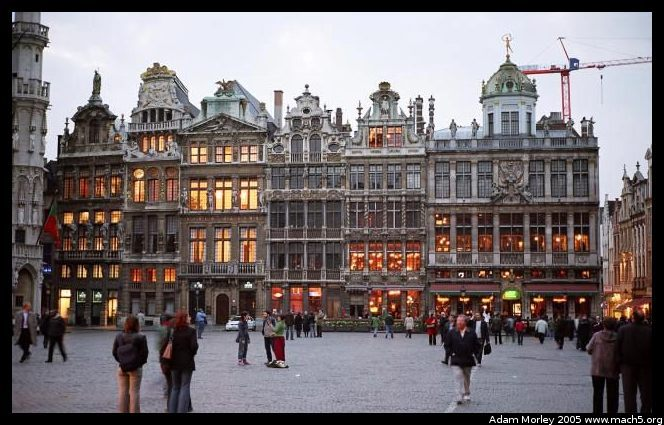Looking west.
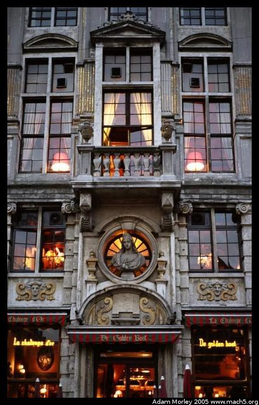Closeup of a building façade.
The next day, I stopped with the blatant tourism and headed for the EU institutions.
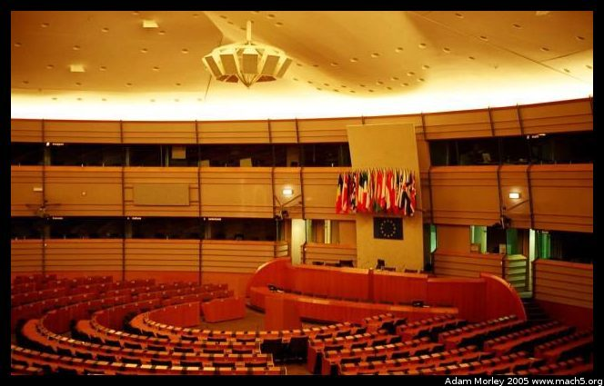The inside of the European Parliament. The tour is only so-so, but it is offered in every language which is spoken in the EU. Something like fifteen languages. What's unique about the European Parliament is that it's set next to a train station and a park. I approached from the park side and almost didn't notice the parliament building! It isn't terribly fancy, and fits the landscape quite nicely. It is nothing like the parliament buildings in Strasburg, which are strikingly set on a river. Just across the street from the train station is a wonderful array of cafes.
At one of those cafes, I had lunch. I was reminded of how functional lunch is in Europe. I spent two hours on lunch. Many people were "rushed" at an hour, and some were there when I arrived and were still there when I left. The other wonderful benefit of the cafes near the parliament is that EU employees frequent them, meaning the number of languages which can be overheard is amazing. I had French, English, German, and a few I could not identify, but sounded Slavic in origin.
I will compliment the Belgians on their willingness to speak French to me. Even in cafes where it was clear the waiters spoke English, they were more than willing to engage me with my French, which was quite rusty considering I hadn't used it for about nine months! It came back to a semi-usable state by the time I was in Belgium for a few days.
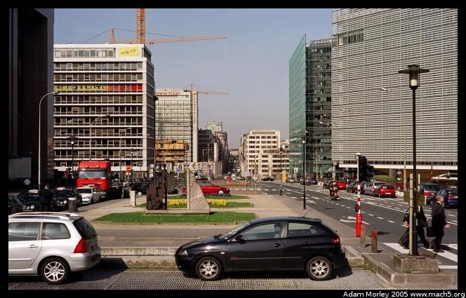Some of the construction around the European Commission. It was amazing how many buildings were under construction in the EU part of town.
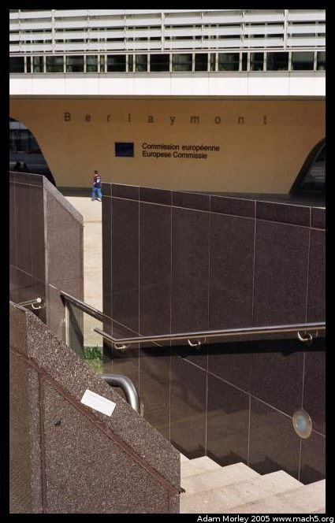This was an attempt to photograph the European Commission and a sticker saying, "Big Brother is watching us," which failed miserably for lack of a instant review function and unavailable depth of field. This trip was almost entirely photographed using film as I was rather tired of digital photography. In this instance, a digital camera would've been horribly convenient.
The next day I attempted to go to the Africa museum, only to find it closed. On my way, I spotted an "outdoor" cafe:
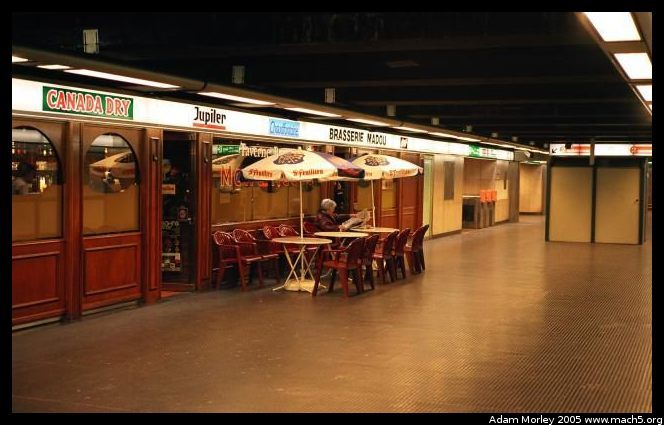In reality, this cafe was in an underground subway station! Only in Europe.
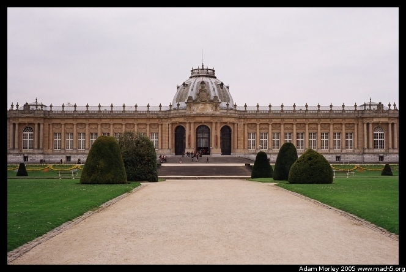The following day, I returned to the Africa museum to find it open. This museum is widely regarded as a disturbing relic of Belgium's colonial period in the Congo. King Leopold II effectively plundered the Congo. This has become a commonly-held opinion in the United States with the release of a book titled "King Leopold's Ghost" by Adam Hochschild. The Belgians, however, do not see it the same way. Only recently have the Belgians started to look critically at the Colonial period in the Congo. I lucked out in and got to see a recently opened exhibit which critically examines the colonial period.
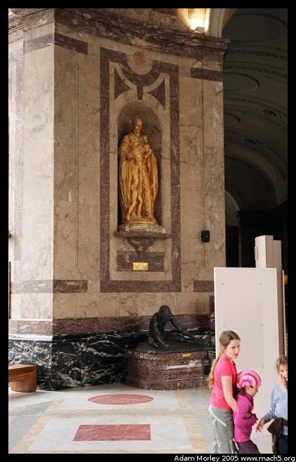Walking through the original museum, in all it's neo-classical style, is a sobering experience. Every bug, animal, weapon, tool and plant specimen from the Congo seem to be housed inside the museum's hundred year old walls. Most of the rooms are maintained in their original state, and most of the signage is in French, which meant it took me a while to read placards. There were even images of when the museum opened, and the Belgians had brought some Congolese people back to Belgium to build a mock village on the museum grounds near the pond.
The exhibit which aimed to critically examine the colonial period was rather tame by Hochschild's standards. Most of the political science professors from my university who heard of the exhibit, and read the materials handed out at the exhibit, were amazed by the disconnect between the literature in the USA, and what is in the Belgian's museum. Apparently, though, the colonial period is a hard memory for the Belgians to re-examine. Either way, it was definitely a step in the right direction compared to what is housed in the rest of the museum. What amazed me most was how many cabinets full of effectively unlabeled items (weapons, tools) there was. There was definitely a feel of eeriness in the museum.
The other oddity of the museum is that it is out in suburbia, and requires a metro ride and a tram ride to get to. I had to ride through a forest which lay to the southeast of Brussels to get there.
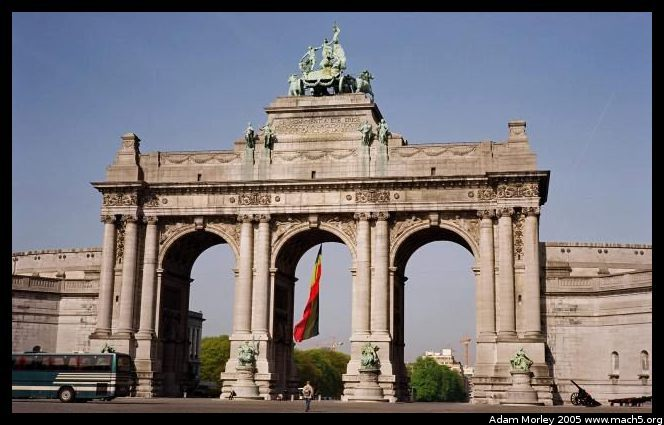There is also a park named after Leopold, just a stone's throw from the European Commission. In it is a commemorative archway, a number of statues, and a large grassy area all dedicated to Leopold.
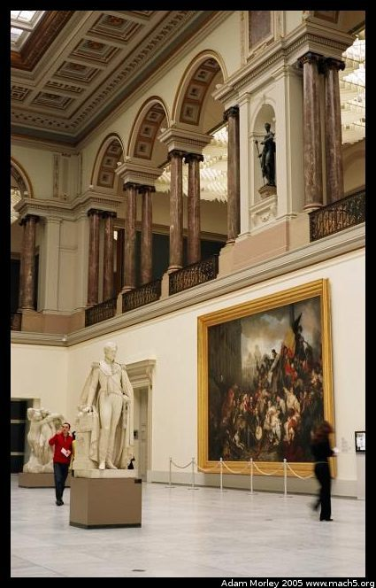I also had occasion to visit the Belgian Museum of Fine Arts, which has an amazing, multi-story collection. Worth a trip. The entryway alone is amazing.
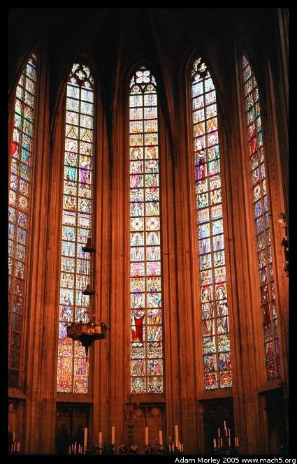What would a trip to a European capital be without a picture of a stained-glass window?
I also tried to get a tour of the NATO headquarters. Let's just say they don't give tours and if you show up and ask, men with large guns will ask for your passport. They asked me at least. No gift shop either, which made me wonder where people got their NATO shopping bags.
The next morning, I awoke, grabbed my bag, and headed for the airport to go to Senegal.
Adam can be reached at adam dot morley at gmail dot com